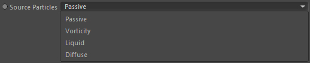
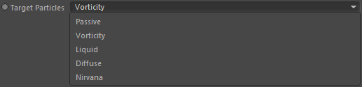
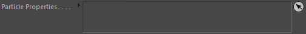

Parameters
Parameters
Source Particles

The particle type of the Source Group to use.
Source Group

The source particle group which contains the particles that you want to convert, transfer or kill.
Target Particles

The particle type of the Source Group to use (if you have defined a Target Group that one will be used instead). If you set the mode to 'Nirvana' the particles will be killed.
Target Group
The target particle group which should take the converted or transfered particles from the source group. This is optional if you want to kill particles only.
Particle Emission Settings
When you convert the particles you can create new particles around the original particles. This is done using the linked Particle Emission Settings.
Particle Properties

Any particle properties linked here will be attached to the converted/transfered particles.
Kill original
Defines if the original particles shall be killed after conversion or transfer.
Only at particle location
Only one particle will be created from the original particle at the source location.
Variation
Variation factor for the generation of the new particles from the source particles.
Parameters:: Passive - Liquid - Vorticity Particles
Velocity multiplier
The converted particles take over the velocity of the source particles. With this multiplier you can increase/decrease the initial velocity of new particles.
Alignment
Takes an alignment mode which defines the initial vorticity direction of the converted particles.
Acceleration multiplier
The converted particles take over the acceleration of the source particles. With this multiplier you can increase/decrease the initial acceleration of new particles.